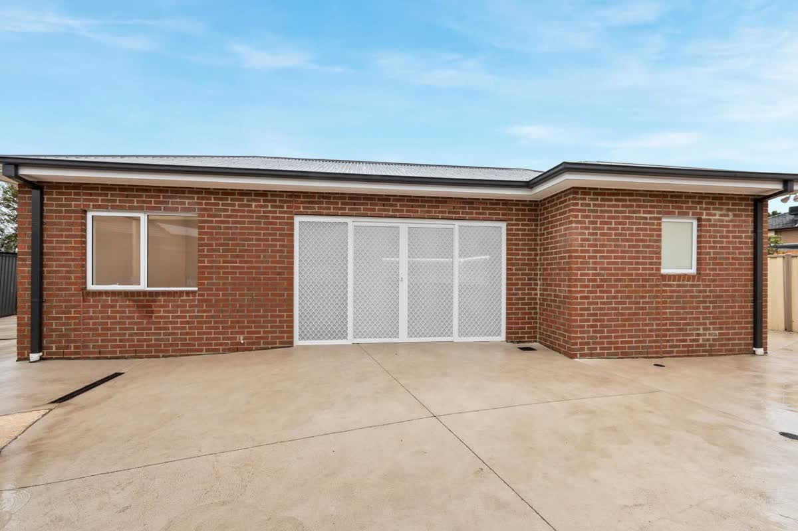
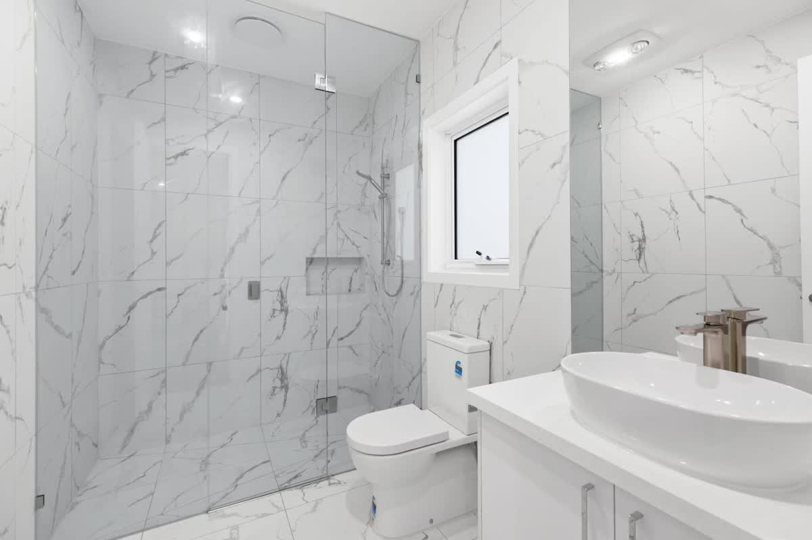
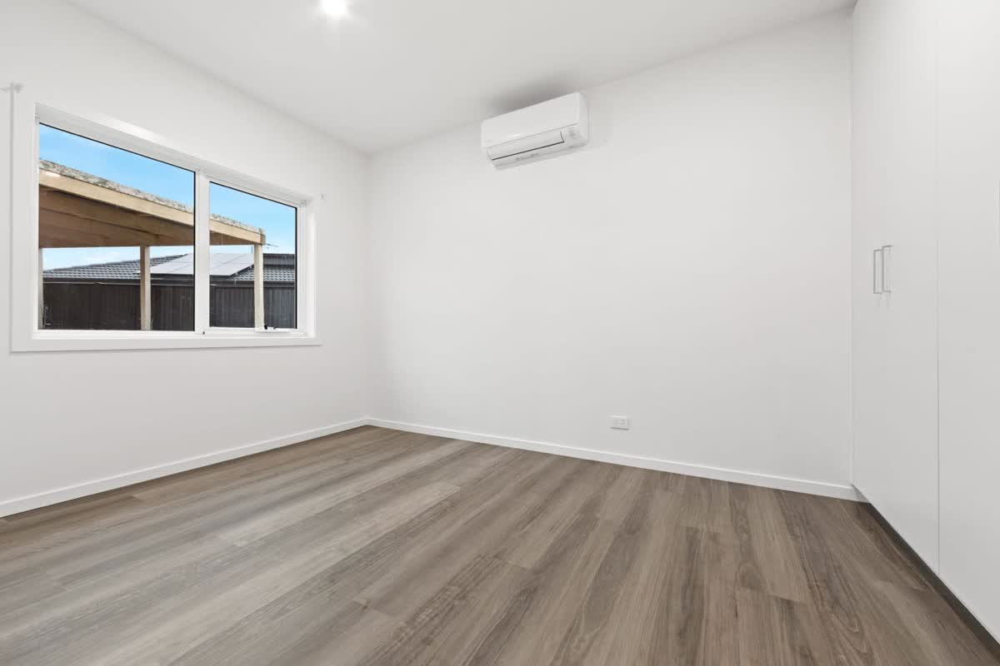
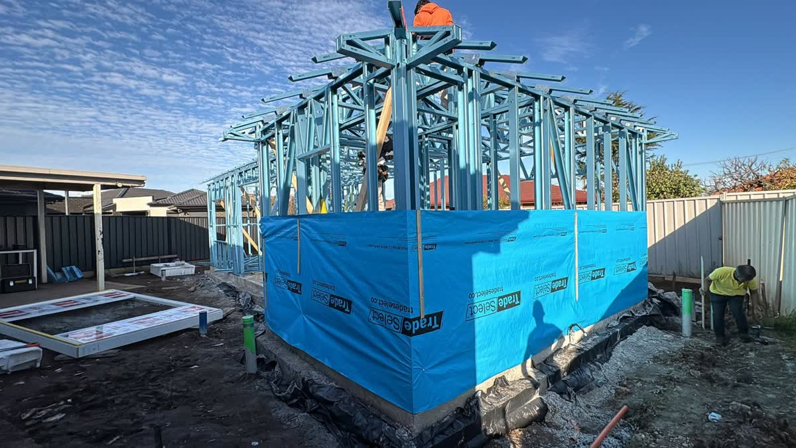
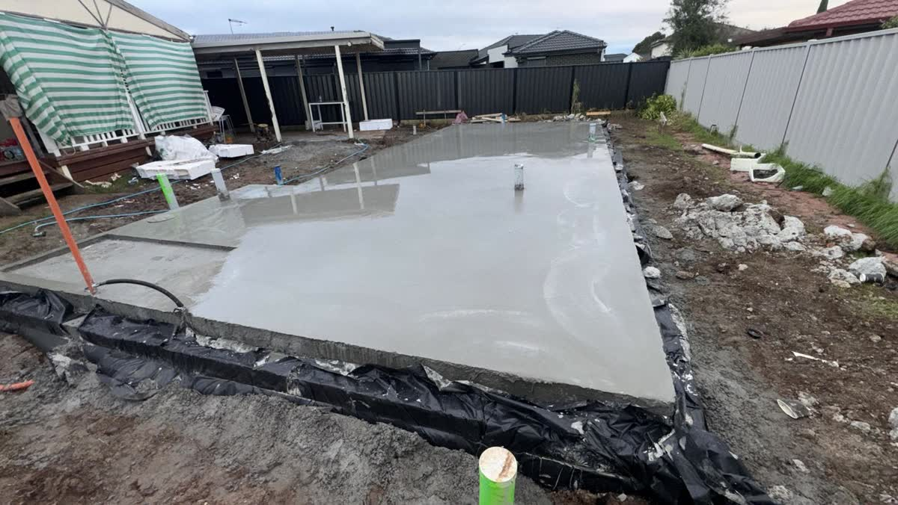

Granny flats
Granny flats on your block
A small second dwelling in the back yard: room for family, an independent studio, or a rental. We design and build, or build to your plans, and we check your block first.
A second home on your block
A granny flat is a small second dwelling on a block that already has one home. It has its own kitchen, bathroom and laundry, so whoever lives there is independent.
- Family: a parent, or an adult child, close by
- A studio or an office, separate from the main house
- A rental for extra income

Before you start
Building permit
A granny flat needs a building permit. Our registered building surveyor can issue permits on jobs we don't design or build. More on building permits.
Planning permit
In Victoria it often needs no planning permit, depending on its size, the zone and any overlays.
We check your block first
Before you spend on plans, we look at the block and tell you what the job needs.
A granny flat we built, St Albans
A small second dwelling in a back yard: steel frame, brick, its own kitchen, bathroom and laundry.





How a build runs
First talk
We talk through what you want to build, your budget and the site.
Design
A design that works for how you'll use it and meets the building rules.
Building permit
An independent registered building surveyor checks the plans and issues the permit. By law you, the owner, appoint them, not the builder. You can also use the council's building surveyor.
Construction
We build it, including the civil works. The surveyor inspects at the stages set in the permit.
Handover
The surveyor issues the final document the job needs, an occupancy permit or a certificate of final inspection, and we hand over.
Surveyor, or designer and builder. Never both on one job.
Under Victoria's Building Act, our surveyor can't issue the permit or do the inspections on a job that Wollemi designs or builds. If we issue your permit, you choose the builder, and we have no arrangement with them. If we design or build it, you appoint an independent building surveyor, who issues the permit and does the inspections.
Thinking about a granny flat?
Book a time for us to see the block, or call Ben on 0481 008 080. Send your plans or photos with your enquiry and we'll come back to you with the next step.